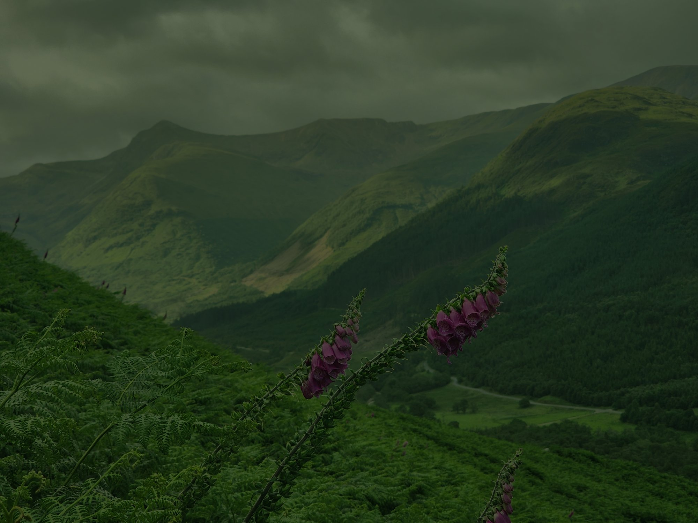
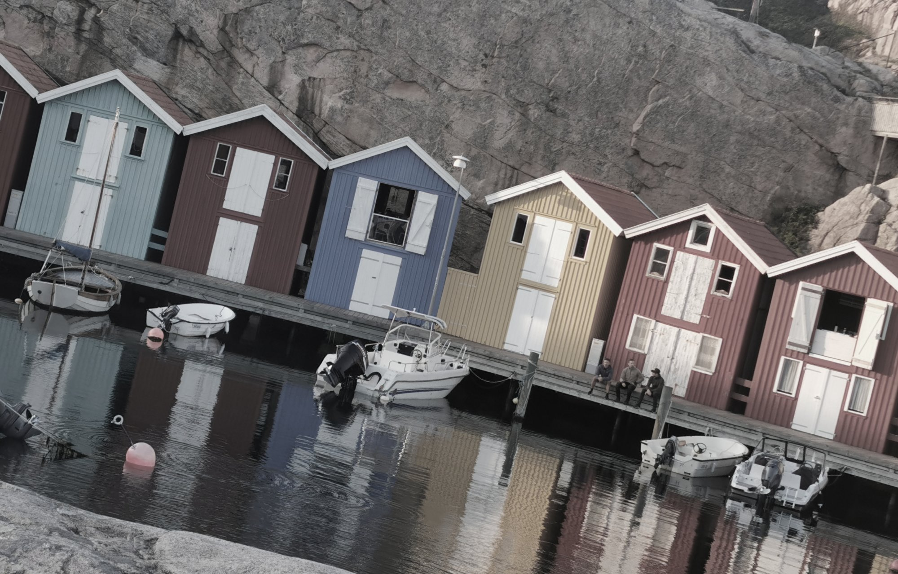
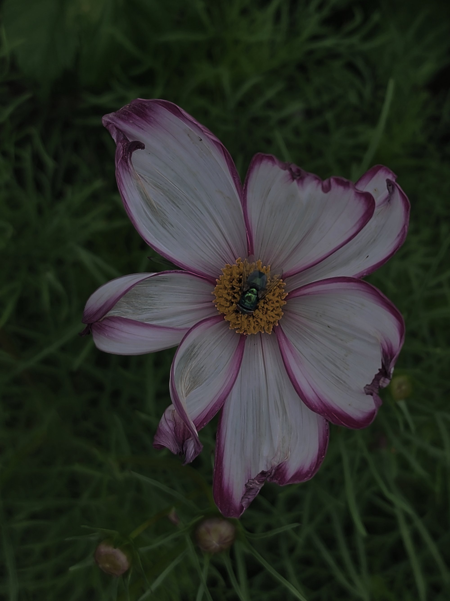

Bildredigering


I bild ett har jag ändrat ljuset, för himlen var väldigt grön och mörk, så höjde kontrasten med Curves och balancerade färgerna med Color Balance.


I bild två har jag först rätat upp bilden då den var sned, använde Levels och Curves för att få till med svärta och kontrast. Pillade sen lite med Vibrance för färgerna, och bytte helt enkelt färg på en blå stuga till lila med att använda Hue/Saturation. Gjorde detta med Polygonal Lasso och en mask så dörrar och båten inte påverkades.


I bild tre var bilden väldigt mörk och dom vita bladen var inte så vita. Jag tog bort flugan med Clone stamp och Spot Healing Brush. Använde Levels för att få bladen mer vita, och ljusade upp bilden överlag med Curves.